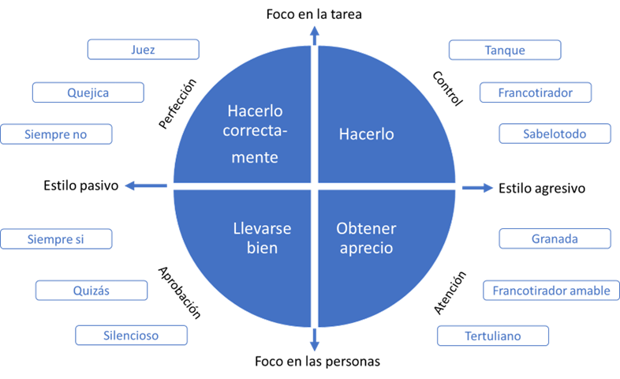

Conversaciones que transforman equipos
Autor: Enrique Sacanell
Introducción
Nos pasamos la vida en equipos. En la escuela, en la Universidad, en el deporte, en el trabajo... Equipos operativos, equipos de proyecto, equipos directivos.
La capacidad de trabajar en equipo y de desarrollar equipos capaces de sacar el máximo potencial de sus miembros y de la interacción entre ellos se ha convertido en una competencia clave en la sociedad actual.
La complejidad reciente de los procesos de trabajo exige una colaboración que supera incluso las barreras departamentales. Todo ello hace del equipo un componente clave en cualquier organización actual y sus competencias para conservar algo crítico.
El enfoque tradicional de Recursos Humanos centrado en el individuo en sus metas de desempeño y necesidades ha quedado totalmente obsoleto por incompleto. La gestión de las personas y de su talento ha de incorporar al equipo como piedra angular.
Las conversaciones de los equipos
Nos pasamos la vida conversando. Más aún no es imaginable un equipo sin conversaciones. El equipo conversa para coordinarse, para establecerse objetivos, para realizar un seguimiento, para analizar los problemas, para buscar soluciones, para innovar, etcétera. Sin embargo, es infrecuente que el equipo converse sobre cómo es su conversar. Cómo se dicen las cosas unas personas a otras, de qué se habla y de qué no se habla (y debería hablarse), qué papel tiene cada una de las personas en las conversaciones, ...
El liderazgo como generador de conversaciones
Liderar implica influir, influir en una determinada dirección.
Es posible que como muchas otras personas consideres que el concepto de liderazgo no te afecta a ti. Sin embargo, es imposible que no generes alguna influencia en tu entorno. Puede que no sea de una forma intencional, pero lo ejerces no tengas duda. En ese sentido todos somos líderes y responsables de lo que ese liderazgo fomenta.
10 líneas de reflexión para empezar a analizar tu equipo y las conversaciones que realmente importan.
Hay 10 aspectos que pueden ayudar a encontrar qué tipo de conversaciones necesita tu equipo para reflexionar sobre estas cuestiones:
- Dimensión de la misión: ¿Tiene claro el equipo su propio sentido como equipo?, ¿para qué esta? En los equipos de proyecto puede ser más evidente la respuesta sin embargo cuando el equipo perdura en el tiempo o es un equipo de carácter estructural la respuesta no es tan obvia. Cuando el sentido del “para qué” no está claro el equipo se resiente pierde el rumbo y energía en su actividad.
El “para qué” tiene una vertiente más pegada a la tarea lo que viene a denominarse misión, y alude a la actividad que tiene que realizar el equipo. Al producto o servicio que se espera de él. Sin embargo, hay otro para qué más amplio. Es el propósito del equipo aquello más grande a lo que contribuye, lo identifica el equipo es compartido por todo el equipo.
-
Dimensión de evaluación: ¿Cómo evalúa el equipo su avance en el logro de sus objetivos? Un equipo que no evalúa lo que hace pierde la capacidad de mejora de aprendizaje y de oportunidades de reconocimiento y celebración cuando es el caso. La falta de evaluación impide la retroalimentación del equipo y con ella la capacidad de desarrollar su potencial.
-
Dimensión de los encuentros: ¿La forma en que se gestionan los encuentros del equipo es eficiente? En otras palabras, ¿cómo de bien se organizan y realizan las reuniones del equipo?, ¿son efectivas?, ¿se toman decisiones claras con responsables y plazos específicos? Cada vez hay más equipos que trabajan en la distancia añadiendo una dificultad a la gestión de las relaciones en el equipo.
-
Dimensión de comunicación: ¿Cómo conversa el equipo?, ¿se hablan las cosas, aunque suponga contradecir lo que otra persona ha aportado o predomina lo políticamente correcto la imitación del conflicto? Cuando se opina de forma crítica ¿se hace de una manera que aporta y construye? ¿Hay temas de los que no se habla y se debería hablar? ¿Se habla desde la exposición y defensa de lo expuesto o desde la indagación y el deseo de entender los otros puntos de vista?
-
Dimensión emocional: ¿Cómo se maneja las emociones en el equipo? ¿Hay espacio para poder hablar de ellas?, ¿nos preguntamos y preguntamos a las demás personas con qué ánimo se encuentra? ¿Cómo de competente somos manejando nuestras emociones, la sabemos identificar, sabemos cómo fluir de una emoción que nos hace daño a otra más constructiva?
-
Dimensión gestión de conflictos: ¿El equipo gestione adecuadamente los conflictos? ¿Los callamos, los hablamos, cómo los hablamos?, ¿los vemos como una amenaza, como una oportunidad, y sabemos ponernos en el lugar del otro para entender su punto de vista?
-
Dimensión de la confianza: ¿En qué medida hay confianza dentro del equipo? la confianza tiene diversas caras y cada una de ellas es clave para la fortaleza y eficacia de un equipo. a. La confianza en la competencia técnica de mis compañeros “saben lo que hacen”. b. La confianza en que cuando alguien se compromete algo lo hace y si algo se lo impide se hace cargo rápidamente de la situación la comunica y buscamos la mejor forma de hacer frente a esta situación. c. Confianza en que en caso de conflicto siempre se velará por el interés del equipo por encima de los intereses particulares. d. La confianza en que las personas del equipo hablan claro y de frente y no van por la espalda u ocultan cosas para beneficio propio, aunque pueda resultar doloroso para otros. e. Confianza en que en el equipo se puede decir lo que uno considera oportuno sin que se ha utilizado en su contra. Cómo está mi equipo en estas dimensiones.
-
Dimensión del liderazgo: ¿Qué tipo de liderazgo hay en el equipo? ¿El liderazgo es evidente, está reconocido, tiene claro el equipo quien ejerce el liderazgo y lo que su equipo espera del o de ella? El líder ¿controla, confía de la responsabilidad y autonomía o la concentra en su persona da un feedback continuado y de calidad?
-
Dimensión del talento: En qué medida se aprovecha el talento de cada persona del equipo. Conocemos que talentos les gustaría desarrollar más a cada componente del equipo.
-
Dimensión de la madurez: ¿En qué momento el desarrollo se encuentra de equipo?
Capítulo 1: Sobre los equipos
Con frecuencia surge la duda ¿somos un equipo? Igualmente, si somos un grupo de personas con una tarea común que para su realización necesita de la articulación de nuestro trabajo ya somos un equipo. Mejor o peor pero un equipo. Lo que tendríamos que preguntarnos no es qué tenemos que hacer para ser equipo sino qué tenemos que hacer para mejorar como equipo.
Si por el contrario somos un grupo de personas que colaboramos incluso compartimos lo que hacemos, pero no tenemos una tarea común propia y específica de este grupo entonces no somos un equipo y no necesitamos charlas. Lo que define la necesidad de ser o mejorar como equipo no es que 1 sea mejor que otro sino la existencia de una tarea compartida.
Características de un equipo de alto rendimiento
No necesariamente todas estas características están presentes pero seguro que identificamos un buen número de las que planteo a continuación.
- Tienen un rendimiento excepcional mucho más allá de lo esperable por la suma de las capacidades de sus miembros.
- Todas las personas que lo componen muestran un compromiso intenso con el proyecto.
- Hoy crear un ambiente de trabajo positivo centrado tanto en el reconocimiento del esfuerzo como de los logros.
- Saben tomar decisiones que tengan la suficiente intensidad emocional como para producir la energía necesaria en el equipo.
- Muestra en altos niveles de confianza. Hola confianza de la habilidad técnica del equipo confianza lo que se dice se hace confianza en la sinceridad y el cuidado mutuo.
- Los acuerdos y compromisos se cumplen escrupulosamente.
- Hay un elevado grado de entusiasmo y energía.
- Hoy existe un relato compartido de la historia del equipo con momentos significativos vividos.
- Humor y diversión por encima de la media.
- Aceptan los conflictos los gestionan constructivamente y promueven soluciones divergentes.
- Saben decirse las cosas con claridad y respeto y escucharlas incluso cuando no son cómodas de decir ni de escuchar.
- Profundo compromiso con el crecimiento y el éxito personal mutuo.
- Compromiso personal con un propósito con algo mayor que ellos mismos.
- Hoy sinergia y conectividad entre ellos.
- Hoy aprenden y se desarrollan de manera individual y colectiva.
El proyecto Aristóteles de Google
En 2012 Google inició un ambicioso proyecto para identificar cuáles eran las claves que hacían a algunos equipos extraordinarios. Partiendo de la hipótesis de que eran mejores equipos aquellos en los que sus componentes compartían aficiones, se relacionaban fuera del trabajo, tenían expedientes académicos de gran nivel y estaban equilibrados en cuanto a género.
Reunieron a un equipo de expertos multidisciplinar para realizar la investigación que no confirmó la hipótesis. Hoy después de más de 200 entrevistas con empleados de Google y de analizar más de 250 atributos diferentes en unos 180 equipos de trabajo concluyeron identificando las 5 claves que llevan a un equipo hacia el alto rendimiento:
-
Seguridad psicológica. Un equipo tiene más probabilidades de convertirse en extraordinario en la medida en que sus componentes sienten que pueden tomar riesgos sin que eso les exponga a ser cuestionados avergonzados o rechazados. Hoy sienten que pueden expresar sus opiniones libremente, aunque puedan incomodar o ir en contra de la opinión mayoritaria. Se sienten escuchados cuando exponen sus puntos de vista por disonantes o extraños que puedan parecer a otras personas.
-
Confianza: los equipos que destacan muestran un alto grado de confianza entre sus miembros. Saben que pueden contar con el apoyo de sus compañeros y que todos ellos van a aportar lo mejor de sí mismos para obtener un trabajo de calidad en el plazo requerido.
-
Estructura y claridad: los objetivos los planes y los roles están claros. Todos los conocéis lo entienden y los tienen como lo imitación en su día a día.
-
El sentido del trabajo: saben que su trabajo contribuye a algo que les trasciende y que le importa a cada 1 de ellos.
-
El impacto del trabajo: saben que lo que cada 1 hace tiene repercusión en lo que hace el resto del equipo. Ven con claridad el impacto de su trabajo también en su entorno y más allá del equipo.
¿Por qué fallan los equipos?
-
La cultura organizativa no fomenta el trabajo en equipo. Desarrollar equipos de alto rendimiento no es solo una decisión que incumba a un equipo es algo que ha de potenciarse desde la máxima dirección con decisiones concretas que reconozcan fomenten y asienten las buenas prácticas del trabajo en equipo.
-
El sistema retributivo es contradictorio con el trabajo en equipo. Modelos retributivos muy centrados en el individuo que incentivan la competencia interna pueden ser un elemento letal para el desarrollo de los equipos.
-
Un sistema de selección que no tiene en cuenta la capacidad para trabajar en equipo. Se focaliza en la competencia técnica sin valorar suficientemente la trascendencia de que las personas tengan el potencial adecuado para contribuir al equipo.
-
Las relaciones de poder en la organización. Algunas personas no aceptan que alguien con menor responsabilidad jerárquica o una titulación académica e inferior o incluso igual, pero desde otro ámbito de conocimiento opines sobre su trabajo o su desempeño. O contribuya en una relación de igual a igual a un trabajo de equipo.
-
La cultura de reconocimiento. No existe una cultura de reconocimiento o esta no destaca el trabajo en equipo se produce un impacto negativo en el avance del propio equipo.
-
Hechos del pasado que siguen impactando en el equipo (despidos marcha de algunos de sus miembros nombramientos etcétera cerrar paint y que han generado unas dinámicas sistémicas que afectan a su funcionamiento hoy punto el pasado puede ser un ancla para el crecimiento de un equipo.
-
Falta la claridad de los roles y en el desempeño de estos.
-
El liderazgo no es adecuado o la persona que lo dijera lo ejerce de manera poco eficiente.
-
El método para tomar decisiones no es compartido o se toman malas decisiones.
-
Hay personas con agendas personales contradictorias al desarrollo del equipo y al de sus objetivos. Alguna de las personas del equipo tiene la mirada fuera de él, están pendientes de otras cosas.
-
Hay relaciones personales conflictivas que afectan al equipo. Las relaciones personales entre algunos de sus miembros son determinantes para el funcionamiento del equipo. No hace falta que las personas que componen equipo sean amigas, pero sí que sean capaces de relacionarse lo suficiente como para contribuir al equipo al máximo nivel.
Capítulo 2: Conversar en la diversidad del equipo
Conversar en equipo no es igual que conversar individualmente. Cuando hablamos ante un grupo de personas se amplifica lo que decimos, no solo por la multiplicación de interlocutores y con ello las interpretaciones y emociones, sino también por la vivencia que supone experimentarlo en grupo. Así una felicitación hecha en público adquiere una dimensión muy distinta a la fecha en privado.
Y qué decir de una crítica o del cuestionamiento de un comportamiento o de un resultado. Hacerlo en público supone un añadido emocional muy fuerte que llevará a la persona aludida a sentirse ridiculizada menospreciada o humillada.
Por ello las felicitaciones, los reconocimientos, los feedback de apoyo pueden plantearse en público, sin embargo, cualquier opinión crítica respecto al comportamiento trabajo una persona siempre ha de realizarse en privado.
En consecuencia, cualquier conversación que busque la modificación de una conducta comportamiento debemos realizarlo en un contexto de privacidad.
Conversaciones en equipo que deberían ser individuales
Tenemos que evitar utilizar al equipo como auditorio de conversaciones que afectan solo a una parte de las personas presentes en la reunión. En un contexto grupal las cosas no se escuchan igual ni se expresan igual.
Conversar en la diversidad
Es comúnmente valorado la riqueza de la diversidad en los equipos. Personas con formaciones académicas plurales, experiencias personales diversas, especializaciones diferentes, etcétera. Todo ello enriquece al equipo sin embargo conlleva también estilos de comunicación y relación que pueden entrar en conflicto.
Podemos identificar cuatro estilos reflejados en la mayoría de los modelos. Aunque cada persona es singular y una mezcla de componentes de cada estilo a veces algunos predominan.
• Estilo racional centrado en el detalle y preocupado por el análisis que necesita tiempo para reflexionar. Tierra para el modelo bridge
• Estilo racional pero orientado a la acción a las decisiones rápidas con los datos esenciales. Fuego.
• Estilo emocionada apasionado creativo que huye de todo lo que le pueda ocurrir y da mucho peso a la intuición. Aire.
• Estilo emocional, aunque me han preocupado por las personas por el con quién más que por el qué. Necesita sentirse incluido en que se cuenten con todas las personas. Agua.
En equipo tenemos que modular nuestro estilo propio para conectar al menos parcialmente con cada 1 de los otros estilos que nos escuchan.
En consecuencia, no tendremos que plantear las cosas ni con demasiada retórica ni con demasiados datos ni de forma demasiado directa ni demasiado desapasionada. En caso de no satisfacer a los presentes con nuestra comunicación es esencial que tengamos la capacidad de escuchar suficiente de lo verbal y sobre todo de lo no verbal para darnos cuenta de que no estamos conectando incluso que estamos generando una reacción adversa, para introducir el tema de la conversación y tratar de reconducirla: “perdonad que pare un momento pero tengo la sensación de que hay algo en la presentación que algunas personas les estén acomodando y no quisiera continuar sin tratar de identificarlo para poder modificarlo. Por ejemplo, tengo la sensación de que Pablo y María os estáis moviendo en la silla y poniendo cara de desagrado es así hay algo que desagrada de la presentación.
Personas difíciles para conversar en equipo
3 tipos de comportamientos cuyo impulso motor es la perfección, es decir, que las cosas se hagan bien. En cuanto sienten o perciben el menor riesgo de que eso no sea así disparan ese lado oscuro de su estilo de relación.
• El juez. Crítico frente al error quisquillosa hasta la perfección y asume que siempre tiene la razón. Le encanta juzgar a los demás y dictar sentencia condenándote.
• El quejica. Disfruta haciéndose la víctima y se queja constantemente.
• Él siempre no. Todo lo ve negro, aunque se ve a sí mismo como realista no como pesimista. Ninguna opción le parece buena.
Otros 3 tipos de comportamiento asociado con personas difíciles tienen como elemento motor el control el que las cosas se hagan.
• El tanque. Avasallador y despistado, fuerte y contundente o silencioso y con una precisión quirúrgica. Para el tanque el fin justifica los medios. Si te interpones en su camino te elimina.
• El francotirador. Se dedica a encontrar tus puntos flacos y a utilizarlos en tu contra saboteándote, ofendiéndote o hablando mal de ti.
• El sabelotodo te explicará sus conocimientos porque realmente sabe mucho pero no dedicarle ni 1 minuto a escuchar tus ideas claramente equivocadas y mucho más pobres que las suyas.
En otras ocasiones el motor de comportamiento es obtener atención y sentir aprecio.
-
El Granada. Explota con arrebatos desproporcionados respecto a las circunstancias de donante y logra que los demás se alejen buscando refugio sin entender nada.
-
El francotirador amable. Sus ataques son una forma divertida de llamar la atención.
-
El tertuliano. Habla de todo sin tener conocimiento de nada.
En los últimos 3 tipos de comportamiento que pueden resultar difíciles en una conversación en equipo el motor que los impulsa es el de llevarse bien sentirse aprobados.
• Él siempre sí. Se ofrece rápidamente a todo, aunque luego le cuesta cumplir sus promesas. Quiere complacer a todo el mundo, pero en realidad no complace a nadie.
• El quizás, quizás, quizás. Cuando se enfrentan una decisión importante postergan la decisión eternamente. Les cuesta mucho trabajo posicionarse.
• El silencioso. Es imposible saber que le pasan y que piensas porque no dice nada.

Capítulo 3: Conversaciones básicas en las reuniones de equipo
Tener claridad sobre el fin para el que se presenta el tema es determinante para seleccionar la mejor forma de estructurar la conversación. De ahí la importancia que tiene anticipar a las personas participantes, no solo los temas a tratar, sino la finalidad con la que se presenta al equipo.
Si las agrupamos según el objetivo o la finalidad con la que se lleva un tema de la reunión podemos identificar cuatro tipos básicos de conversaciones:
• Seguimiento: centrada en el seguimiento de los acuerdos adoptados o los plazos establecidos para el desarrollo de un proyecto.
• Información: orientada a transmitir hechos acontecimientos o acuerdos adoptados en otros foros.
• Decisión: dirigida a tomar un acuerdo en torno a un tema.
• Debate: en la que no se pretende cerrar un tema sino compartir opiniones reflexiones o puntos de vista.
Una función clave de quien lidera una reunión de equipo es mantenerla centrada en su ámbito de responsabilidad, enfocada en los temas previstos y en el objetivo con el que cada 1 se ha planteado.
Capítulo 4: Conversaciones de expectativas y feedback
Hoy vivimos saturados de reuniones. No se trata de añadir más reuniones o de reunirse por obligación. Cuantas menos reuniones mejor pero no menos que las que son imprescindibles. La frecuencia puede variar en diversos momentos del año o en diferentes momentos del equipo o de la tarea que tenga entre manos. Sin embargo, tener una reunión del equipo al mes podemos considerarlo como un mínimo razonable.
Cómo manejar las reuniones de equipo
Conversaciones para fijar expectativas
Al igual que cualquier persona, un equipo necesita saber qué se espera de él. La falta de claridad en este aspecto desoriente puede provocar que se avance en una dirección en una forma que no se corresponde con esas expectativas.
Quien lidera al equipo tiene la responsabilidad de generar este tipo de conversaciones en el equipo. Quien forma parte de él tiene la responsabilidad de plantear la falta de claridad respecto a lo que se espera, cuando así lo percibe.
Cuando las expectativas no están suficientemente definidas surgen con facilidad discrepancias y conflictos en el equipo ya que cada persona saca sus conclusiones sobre lo que ha de hacerse, cuáles son las prioridades y la forma en que ha de hacerse.
Las expectativas respecto a un equipo no se refieren solo a objetivos, a lo que tiene que hacer o lograr, sino también a la forma en que el equipo ha de trabajar, a los valores que se espera que su forma de hacer ponga de manifiesto, a la manera de relacionarse o colaborar en el propio equipo y con otros equipos, con proveedores o con clientes etcétera.
Las expectativas pueden surgir:
• Desde otros niveles de la organización. • Desde que lidera el equipo. • Desde el propio equipo.
Las expectativas que la organización define son un marco en el que trabajar y no le corresponde al equipo discutirlas al menos una vez que han sido aprobadas en el órgano legitimado para aprobarlas punta el equipo de conocerlas y éstas han de expresarse con el detalle la especificidad suficiente como para que puedan orientar las conductas del trabajo a desarrollar. A partir de ahí el equipo podrá plantearse qué ha de hacer para satisfacer adecuadamente esas expectativas ya que la organización juzgará su desempeño por el grado en que se satisfagan.
Al comienzo de cada año es útil que el equipo mantenga una conversación sobre las expectativas para este nuevo periodo. Una conversación que comienza con las expectativas que la organización ha definido, continúa explorando las del propio equipo líder incluido y termina incorporando aquellas otras que su líder pueda plantear.
Esquema básico de una conversación de fijación de expectativas
Feedback características generales y tipos
Una conversación de feedback es aquella en la que damos nuestra valoración sobre una conducta o un desempeño. Ha de tener lugar lo más cerca posible del momento en que se ha producido el hecho a valorar. Asimismo, en ella tenemos que mencionar la situación específica, el comportamiento o el resultado sobre el que vamos a expresar nuestra opinión.
Los equipos como las personas necesitan recibir feedback para saber si se mueve en la dirección que se espera de ellos. En este sentido el feedback es en sí mismo una forma de reconocimiento, una manera de hacer que el equipo se sienta visto.
Claro que también es importante un buen equilibrio entre feedback de apoyo (el que damos para subrayar que se trabaja según lo esperado o más allá y apoyar la repetición de ese comportamiento) y el feedback de reorientación (con el que tratamos de mostrar que algo ha de tomar otro camino porque tiene que hacerse de otra manera).
En el caso del feedback el equilibrio más productivo no es 1:1, 1 de apoyo, 1 de reorientación. Hemos de dar más peso y más frecuencia el apoyo a las cosas bien hechas que sin duda serán las más frecuentes.
El feedback de apoyo podemos darlo al equipo o a una persona concreta en una reunión del equipo. Sin embargo, el feedback de reorientación solo lo haremos en equipo cuando sea el su destinatario. El feedback de reorientación individual siempre tenemos que realizarlo en privado. Hacerlo en público tiene un impacto emocional grande que va a incrementar la respuesta defensiva y a dañar la relación con esa persona.
Conversación de feedback de apoyo
¿Cuántas veces en el último mes le has dicho a tu equipo o a cualquier equipo de los que formas parte una frase de reconocimiento agradecimiento felicitación etcétera por el trabajo realizado?
El feedback de apoyo de apoyo, el reconocimiento al esfuerzo, al trabajo realizado a los resultados logrados es una energía inagotable que renueva las fuerzas del equipo aumenta su autoestima la confianza en su capacidad y el orgullo de formar parte de él etc.
Tenemos que aprender a desarrollar en nosotros y nuestros equipos la capacidad de tomar conciencia de los “micro éxitos”, de decirnos lo que se ha hecho bien subrayar aquello que ha sido un buen ejemplo de nuestros valores etcétera culturalmente tendremos a buscar acciones o hechos espectaculares para identificar motivos de apoyo o reconocimiento.
Si es el caso podemos añadir una mención a la contribución específica de cada miembro del equipo. Si queremos subrayar solo la aportación de alguna persona o de parte del equipo es importante contextualizarlo para no dar un mensaje equívoco. “En esto todo el equipo hemos sido copartícipes sin embargo en esta ocasión me gustaría agradecer de manera especial a Julia que a pesar de estar pasando por unas circunstancias personales difíciles ha estado como 1 más afrontando el problema”.
Dar feedback de apoyo a una persona o a una parte del equipo implica hacer explícitas las razones de esa diferencia y asegurarnos de que en otras ocasiones sean otras las personas mencionadas.
Cuando somos nosotros los que recibimos tenemos que evitar respuestas evasivas. “No es nada”, y “es nuestro trabajo”, o “cualquiera hubiera hecho lo mismo”. No deja de ser una forma de quitar valor a los menos dicen y con ello a quién lo dice.
Un feedback de apoyo no es un discurso motivador o una arenga. En este caso se expresan valoraciones positivas pero inespecíficas. “Estoy encantado de trabajar con vosotros sois un gran equipo y todo El Mundo lo valora sigamos así y seremos un equipo extraordinario.”
A nadie les agrada esas palabras sin embargo no concretan la conducta o los hechos que despiertan tanto entusiasmo. Un feedback de apoyo tiene por finalidad que una conducta acción se repita por lo que es esencial que quede claro el motivo concreto que lo genera. Incluso es útil que tras el mensaje inicial preguntemos si queda claro el motivo concreto que genera ese reconocimiento.
Conversación de feedback de reorientación
Hemos explicado anteriormente que el feedback de reorientación busca que una conducta comportamiento se modifique, por ejemplo, hacer algo que no se ha hecho, hacerlo más, hacerlo menos hacerlo diferente o no hacerlo.
Es importante insistir en que cuando se refiere a una persona a una parte del equipo lo recomendable es dar el feedback a la persona con personas afectadas no delante del equipo.
Abordar una conversación de reorientación requiere de una disposición emocional adecuada cuenta llegamos con una intensidad alta es más fácil que perdamos las riendas de la conversación y digamos hagamos algo que no ayude al objetivo que nos planteamos con ella.
Además de nuestra emocionalidad también tendremos que preparar otros aspectos que necesitaremos durante la conversación:
• ¿Qué conducta comportamiento concreto específico y observable quiero plantear al equipo que es necesario modificar?
• ¿Cuál es el fin último al que quiero que contribuya esta conversación? no lo que quiero que el equipo cambie o haga diferente sino, aquello a lo que contribuiría a ese cambio.
• ¿Cómo puedo enunciar de una manera neutra el tema sobre el que quiero centrar la conversación sin anticipar mi punto de vista? Por ejemplo, en lugar de decir “quiero que hablemos sobre el retraso injustificable del pedido que teníamos”, un enunciado neutro sería “quiero que hablemos sobre los plazos de entrega del pedido que teníamos”. El enunciado neutro nos va a permitir continuar la conversación con una pregunta abierta por ejemplo me gustaría escucharos para entender lo que ha ocurrido.
• También es necesario que preparemos evidencias de lo ocurrido y de sus consecuencias reales o potenciales para aportarlo en el debate
Un aspecto para tener en cuenta el comienzo de este tipo de conversaciones la posibilidad de mostrar vulnerabilidad por parte de quien la lidera. Expresiones del tipo “quiero plantear un tema que me genera inquietud”, “no es algo de lo que hablamos habitualmente y no estoy seguro de hacerlo adecuadamente”, “quiero pedir disculpas por no haber planteado antes este asunto” etc. Nos muestra como seres humanos imperfectos y ayudan a generar un clima de conexión con el equipo que reduzca la tendencia a ponernos en una posición defensiva
Capítulo 5: Límites peticiones y malas noticias
Conversaciones de límites
Una vez fijadas las expectativas, el equipo en su trabajo cotidiano va mostrando en qué medida las va a cumplir puede que surja alguna circunstancia no planteada a las expectativas definidas en la que el equipo no responde adecuadamente ya sea en criterio de su líder de la organización o del propio equipo. En este caso será necesaria una nueva conversación que establezca el criterio o los criterios a utilizar en situaciones equivalentes. En otras palabras, una conversación que deje claras las expectativas incluyendo la nueva situación.
La conversación de límites tiene por objetivo hacer ver al equipo que se ha llegado a una situación extrema, que cuestiona bases esenciales del funcionamiento del equipo y que han de adoptarse medidas para que no vuelva a repetirse.
Es una conversación en la que el tono y el lenguaje corporal son especialmente importantes para transmitir el carácter de gravedad que supone llegar a ese punto. Sin embargo, no es, ni puede ser una reprimenda, un reproche o una amenaza. Es una conversación sobre un incumplimiento reiterado que necesita ser analizado desde otro lugar ya que la reorientación no parece ser suficiente. ¿Qué es lo que ocurre que acordamos algo y no lo cumplimos, incluso después de plantearnos el incumplimiento en dos conversaciones diferentes?
| Plantear | Explorar | Acordar |
|---|---|---|
| Recordar la expectativa inicial y la fecha en que se planteó | ¿Dónde está el problema, los obstáculos para que esto ocurra? | Los cambios necesarios para que no se produzcan situaciones de incumplimiento reiterado. |
| Recordar las dos conversaciones de reorientación: fechas y acuerdos adoptados | ¿Qué nos lleva a aceptar compromisos que luego no cumplimos? | |
| Compartir las consecuencias personales para el equipo para la organización etc. | ¿Qué necesitamos cambiar para que no nos ocurran estas situaciones? | |
| Mostrar evidencias en el nuevo incumplimiento. |
Según las características del equipo y sus dinámicas habituales cabe la posibilidad de que esta conversación derive hacia la búsqueda de culpables externos: “no se ha podido hacer porque otro departamento no ha hecho su parte”, “nunca disponemos de los recursos que nos prometen”, etcétera.
También los culpables pueden buscarse en el propio equipo: “algunas personas del equipo no se comprometen en el nivel necesario”, “no nos defiendes bien en otras esferas de la organización y tenemos que aceptar compromisos que sean imposibles de cumplir”, etcétera
Conversaciones para realizar peticiones
En ocasiones la petición la planteamos al equipo en su conjunto, pero lo hacemos para que algunas personas se ofrezcan para llevarla adelante. Lo que tenemos que evitar es hacer ese tipo de petición cuando tenemos en mente qué personas queremos que la recojan. En estos casos, utilizar el equipo lo perjudica, lo convierte en un foro que pretendemos se comporte según nuestros intereses. Si llevamos una petición de este tipo al equipo ha de ser para que este sea protagonista de su decisión estando abierto a cualquiera que esta sea.
Pedir es un proceso de conversaciones que empieza por la creación de contexto. Es el momento de explicar qué nos lleva a realizar esa petición, cuál es su sentido, a qué contribuye su realización.
La diferencia esencial entre pedir y ordenar es que en el primer caso aceptamos el no por respuesta, aunque no nos guste.
Sin embargo, hay ocasiones en el que el “no” no es una opción. Por ejemplo, termina el plazo para la solicitud de una subvención importante y es necesario que todo el equipo deje lo que tenga entre manos para poder llegar a tiempo. Lo habitual no es ordenar al equipo que se comporte así sino pedirle que lo haga.
Cuando dedicamos unos momentos a contextualizar enviamos un mensaje de respeto al equipo. No es un mero brazo ejecutor sino personas que merecen una mínima explicación.
Tras el contexto viene la formulación de la petición. Es clave ser claros en lo que pedimos concretando los detalles los requerimientos para que sintamos que sea realizado adecuadamente.
Un requerimiento especialmente significativo en cualquier petición es el plazo para realizarla. Vaguedades como “en cuanto puedas”, “lo más rápido posible”, “cuando tengas un rato” etc. llevan con facilidad que quienes asumen la petición la interpreten de una manera opuesta a la que quien la realizó.
La petición no termina cuando se realiza. Lo que se pone en marcha es la aceptación por la otra parte coma el compromiso de cumplimiento.
El sí está sobrevalorado con frecuencia estamos tan deseosos que damos un significado que no tiene a frases como: “vale nos ponemos a ello”, “si es lo que hay que hacer…”
No busques el sí, es mucho más útil buscar el no. Cuando el equipo responde demasiado rápido de manera afirmativa, o el acuerdo se hace por asentimiento, nadie se opone, busca el no: haz preguntas como: “¿qué podría hacer que esto que acordamos no se llevará a la práctica? o ¿dónde están los obstáculos para que podamos cumplir o que estamos acordando?
Cuando estamos ante temas en los que es esencial lograr un compromiso que lleve la máxima posibilidad de realización de lo acordado, es bueno dar un plazo para que el equipo analice y reflexione y se posicione. “No respondáis ahora, aunque os parezca claro. Analizadlo darle una vuelta a los problemas y dificultades y en media hora os vuelvo a plantear el tema. No quiero un sí fácil sino un compromiso para lograrlo sorteando las dificultades que sin duda hay”.
Conversaciones para dar malas noticias
Cuando damos una mala noticia, no expresamos una opinión, informamos de un acuerdo adoptado o de un acontecimiento qué ha ocurrido. En muchos casos somos el mensajero, en otros además de trasladar la decisión hemos formado parte de ella. Sin embargo, en el momento de conversar con el equipo sobre la mala noticia, nuestra posición es la del mensajero. No vamos a abrir un debate sobre nuestra posición o nuestra capacidad de influencia en el lugar en el que se tomó la decisión. La tomaron quienes estaban legitimados para ello y poco más hay que hablar al respecto.
No hay manera de convertir en buena una mala noticia, aunque sí algunas maneras de dar las que son mejores que otras. Veamos cómo enfocarlo:
• Lugar adecuado. Mejor en donde el equipo se reúna habitualmente y a poder ser sentados.
• A veces empezar preguntando qué información les ha llegado. Lo principal es ir sin rodeos la mínima introducción necesaria. Primero las malas noticias luego las explicaciones necesarias.
• Explica el tema con claridad y sencillez: esto es lo que sucede este es el plan y están las consecuencias previsibles evita expresar tus opiniones.
• Explica cómo se tomó la decisión. No esperes que todo el equipo lo entienda ni intentes convencerles. Hay una parte emocional en la recepción de una mala noticia que no responde a argumentos racionales.
• Vete preparado para todo tipo de respuestas. Recuerda que no va a ser útil entrar al debate o a la justificación.
• A evitar: o Cuidado con la compasión cuanto lo siento ojalá no tuviera que decir esto o frases como no os preocupéis... o No des falsas esperanzas plantea solo aquello que es seguro. o No minimices la mala noticia. o El centro son las otras personas no tú. Olvídate de quedar bien de que entiendan cómo te sientes tú.
• Se profundamente humano muestra comprensión. Puede ser útil que preguntes ¿qué os preocupa?, ¿qué teméis? Ayudarles a que verbalicen, lo exterioricen, lo saquen fuera. Dales tiempo para que se desahoguen y para que integren la noticia. Permite el desahogo, pero no el debate.
• Hay momentos en que la mejor acción es el silencio.
• Reformula. Ayudarles a convertir su miedo y lo negativo en una historia de cambio.
• Muestra confianza en que pueden afrontar lo que sucede.
• Sé muy respetuoso con sus tiempos sus necesidades y sus estados de ánimo.
• Ayudarles a ver más allá de su realidad actual y a dar un sentido a la mala noticia que han recibido.
• Orienta su mente a las soluciones punta una forma es trocear el problema en pequeñas partes.
• Muéstrale las cosas que no son capaces de ver: aspectos positivos de cómo están afrontando la noticia situaciones duras anteriores que supieron afrontar y superar ETC desarrolla su determinación ayudarles a luchar a creer que pueden superar lo que les ocurre.
• Ofrece tu ayuda en la medida en que esté en tu mano.
• Cierra la conversación transmitiendo esperanza.
• Permanece al lado del equipo.
Capítulo 6: Conversaciones rituales
Capítulo 7: Liderazgo y conversaciones que transforman al equipo
En otras ocasiones, el equipo está con la cabeza tan metida la tarea que pierde perspectiva, se desconecta de su propósito, no tiene claridad sobre la vinculación de su trabajo con los objetivos o el rumbo de la organización. Y eso le hace perder energía fuerza. Se siente, pero no se habla. Incluso se vive, pero no se llega a tomar consciencia de ello.
Pueden ser percepciones de desequilibrio en la distribución de las tareas del equipo. O la sensación de que no está claro cómo se toman las decisiones en el equipo, etcétera. Temas que en ocasiones sí ocupan parte de las conversaciones del equipo, pero no en el equipo. Son cosas que se comentan tomando un café con las personas más afines o fuera del propio equipo. En lugares en los que esa conversación no permite gestionar la situación, más allá de la descarga emocional que pueda suponer o la agradable sensación de compartir con personas que piensan como tú.
Cualquier persona del equipo podría plantear estas conversaciones, pero sin embargo una característica específica de quien lidera es ser un generador de conversaciones que ayuden al equipo a desarrollarse y crecer para alcanzar niveles de alto rendimiento.
Quien lidera el equipo está en la mejor posición para poder mirarlo con cierta perspectiva. De la misma manera es quien mejores condiciones tiene para facilitar que el equipo se detenga durante un rato para tener esa conversación que necesita.
Conversaciones que transforman los equipos
Tipos de conversaciones:
-
Conversaciones de autodiagnóstico. a. ¿Cómo somos como equipo? b. ¿En qué momento estamos? c. ¿Qué necesitamos cuidar y que cambiar?
-
Conversaciones para el alineamiento a. ¿Cuál es nuestro propósito? b. ¿A qué contribuye nuestro trabajo más allá de nuestra tarea? c. ¿Y esa tarea cuál es? d. ¿Que nos gustaría que nos caracterizara como equipo dentro de unos años? e. ¿Qué resultados quisiéramos que nos identificaran? f. ¿Cómo quisiéramos que en ese tiempo nos valoran nuestros clientes otros equipos o la dirección? g. ¿Qué equipo quisiéramos ser en unos años?
-
Conversaciones en torno a la organización de la tarea a. ¿Tenemos claras nuestras funciones en el equipo? b. ¿Consideramos equilibrada la carga de trabajo? c. ¿Hay algo que hacemos con mi equipo que no aporta valor a la tarea que tenemos que realizar? d. ¿Podríamos hacer algo que no hacemos para aportar más valor? e. ¿Tenemos presentes todos los roles que hacen a un equipo más eficiente? f. ¿Somos claros adoptando decisiones y asignando responsabilidades? g. ¿Somos claros haciendo el seguimiento de esos acuerdos?
-
Conversaciones en torno a las relaciones a. ¿Sentimos la confianza suficiente como equipo? b. ¿hay algo que podamos hacer para aumentarla? c. ¿Que necesitamos cada 1 del resto para sentirnos más confiados y sentir más confianza? d. ¿Cómo gestionamos los conflictos? e. ¿Cuáles son nuestras toxinas favoritas cuando la emoción nos atrapa en un contexto de conflicto? f. ¿Que nos ayudaría individualmente y como equipo para afrontar mejor los conflictos?
-
conversaciones sobre la forma de conversar en el equipo a. ¿Participamos de manera equilibrada en las conversaciones? b. ¿En qué medida se nos sentimos escuchados? c. ¿Qué podría ayudarnos a sentirnos más escuchados en el equipo? d. ¿Hablamos más de nosotros o de otras personas? e. ¿Proponemos más que indagamos o viceversa? f. ¿Hablamos en positivo tiene mucho peso lo negativo en nuestras conversaciones? g. ¿Hablamos asumiendo nuestra responsabilidad o lo hacemos más desde una posición de víctimas?
Claves para facilitar las conversaciones que transforman al equipo
Ser un líder generador de conversaciones es condición necesaria pero no suficiente. Además de generarlas es necesario saber facilitarlas, liderar las de una forma que permita al equipo hacerse protagonista y para ello quien lidera ha de saber cambiar el lugar que ocupa en el equipo. No consiste en abandonar el que tiene algo que tampoco podría hacer, aunque quisiera sino un lugar en el que bajar el volumen de algunas maneras de hacer y poner en primer plano otras.
Una posición que podríamos denominar de líder coach y que va a resultar mucho más difícil de ejercitar en estas conversaciones si no es un estilo que impregna al conjunto del hacer de la persona que lo ejerce.
La confianza
Es un concepto con diversas caras. La que aquí resulta más significativa se refiere a la convicción de que puedes expresar lo que piensas sin que lo que digas pueda ser utilizado en tu contra, sin que pueda generarte perjuicios por haberlo hecho. Hoy lo que podemos denominar seguridad psicólogo. Y esta confianza se construye día a día y en todo tipo de conversaciones.
Hay otras vertientes de la confianza, la confianza en que cuando alguien del equipo o el equipo asume un compromiso se va a hacer cargo plenamente de él. O la confianza en la capacidad profesional del equipo para sacar adelante los retos que se planteen. O la confianza en que las personas del equipo se van a expresar con honestidad sin mentiras o maniobras por la espalda etcétera.
Mostrar la propia vulnerabilidad
Una de las estrategias para cultivar la confianza es ser capaz de expresar sus dudas sus temores y hablar de sus errores. Es decir cosas que pudieran ser utilizadas en su contra. Todo ello a la vez que se cuida y evita exponerse de una manera exagerada.
Respeto
Muy vinculado a la confianza tenemos el concepto de respeto. Como el líder has de ser el mejor ejemplo de respeto hacia quienes opinan diferente. El mejor ejemplo mostrando cómo se pueden expresar opiniones divergentes respetando a la persona a la que te diriges. La falta de respeto impacta la seguridad psicológica, en la confianza. El respeto ha de ser algo presente en la vida diaria del equipo no solo en una conversación puntual. Como líder has de ser generador de respeto y un vigilante del respeto en el equipo.
Mente abierta
Vinculado con el respeto a las opiniones divergentes incluso contrarias existe otro aspecto que ayuda a moverse del lugar: una mente abierta. Una actitud que se manifiesta en plantear nuestras opiniones como hipótesis y no como certezas y dispuesto a escuchar para entender otros puntos de vista. Esta mente abierta la podemos reconocer cuando quien lidera la conversación:
No entra a explicar o justificar su manera de hacer cuando alguien dice algo que puede entenderse como una crítica a su desempeño como líder.
No utiliza expresiones del tipo “eso no es así” y en cambio se le escucha a otras como “explica algo más sobre cómo has llegado a esa conclusión”.
Plantea sus opiniones con frases como: “desde mi punto de vista”, “tal y como yo lo veo”, etcétera No interviene constantemente para dejar claro su punto de vista sino que deja fluir la conversación.
Plantea preguntas
Otra forma de cambiar de lugar y también de manifestar esa mente abierta es planteando más preguntas que respuestas. Inspirándonos en Edgar H. Schein Podemos identificar 12 claves del buen preguntar que contribuyen a ocupar ese lugar favorecedor de nuevas conversaciones transformadoras:
• Preguntar para tratar de entender al otro no para rebatir su punto de vista: no te parece que si lo que dices tuviera fundamento hace tiempo que otros lo habrían puesto en marcha.
• No utilizan las preguntas para expresar tu propio punto de vista: creéis que respondieron así porque su verdadera intención era dinamitar la negociación.
• No preguntar para obtener la respuesta que deseas: cómo lo veis yo creo que es claramente mejor la primera opción no.
• Hacer preguntas que se interesen no solo por los datos. Por ejemplo posibilidades ideas sentimientos: cómo se afecta esa decisión cómo sentís al escuchar esto cómo podríamos responder.
• Utilizar preguntas que se preocupen también por las consecuencias o los impactos de las cosas no solo por los resultados: en qué forma hemos contribuido a lo ocurrido a quien más puede afectar esta decisión.
• Evitar las preguntas irónicas: creéis que hay algún equipo capaz de entregar el pedido con más retraso que nosotros.
• Realizar preguntas abiertas que lleven a pensar o reflexionar antes de responder punto que no se pueden responder con un sí o un no.
Las emociones
Las conversaciones que transforman, las conversaciones sobre lo que realmente importa al equipo son conversaciones que nos conectan con nuestras emociones y en ocasiones esas emociones se desbordan en la conversación. Tenemos que saber darles cauce. No tratar de acallarlas sino ponerles palabras; darles espacio para poder fluir de aquellas que paralizan no hacen daño al equipo hacia otras que lo empoderan y le dan energía para seguir adelante.
El principal detector de esas emociones es el cuerpo de uno mismo. Escucharnos a nosotros mismos es una magnífica puerta para escuchar las emociones del equipo: siento que nos hemos bloqueado en este tema y me genera frustración y rabia le pasa a alguien más. Mostrando nuestra emoción abrimos la puerta a la expresión de las emociones de los demás. Preguntando por la emoción mostramos que también es un ámbito sobre el que podemos hablar.
Trabajar con los emergente
Abrirnos a las emociones puede hacer que surjan temas que no estaban previstos. Esto nos plantea otra característica que necesitamos desarrollar para facilitar conversaciones transformadoras: trabajar con los emergente.
Hemos de aprender a trabajar con esos temas que no teníamos previstos pero que el equipo necesita abordar: “Perdonadme un momento, tengo la sensación de que hemos mencionado algo importante algo que nos ha tocado la mayoría ¿os parece que hablemos de ello”.
Mapa de ruta.
Un mapa de ruta nos ayuda a enfocar la conversación.
Capítulo 8: Conversaciones de autodiagnóstico del equipo
¿Somos un equipo?, ¿necesitamos ser un equipo?, ¿en qué medida nos sentimos equipo?, ¿qué equipo queremos ser? Para desarrollarnos como equipo ¿qué necesitamos cuidar?, ¿en qué momento nos encontramos como equipo?
Todas estas preguntas abren conversaciones que permiten al equipo una reflexión auto diagnóstica. Conversaciones que le ayuden a entender mejor su situación e identificar otras conversaciones que necesita para avanzar en su crecimiento y desarrollar su potencial.
El día a día, las inercias, la sensación de falta de tiempo, la presión por los resultados... Son factores que hacen difícil no ya realizar esas conversaciones, sino el mero hecho de pensar que las necesitamos.
Estas conversaciones son el equivalente a la capacidad reflexiva de los seres humanos. Algo que nos diferencia de otras especies y está en la base de nuestra capacidad para desarrollarnos. Un equipo que no reflexiona sobre mí sí mismo está abocado al estancamiento, a la repetición de errores, a sumergirse en dinámicas improductivas, en conflictos que no llegará a entender o interpretarán de manera individual.
Veamos con detalle cada una de estas conversaciones y algunas ideas que nos ayuden a liderarla.
¿Somos un equipo?
En muchas ocasiones tenemos claro que somos un equipo nos vemos como tal. Sin embargo, es conveniente preguntarnos ¿nos sentimos equipo?, y ¿qué necesitamos para sentirnos más equipo?
Una forma de abordar esta conversación puede ser la pregunta escala, en la que pedimos a las personas que se posicionen en el espacio entre 2 extremos, 1 que representa la valoración somos un grupo y otra somos un equipo. Cada persona del equipo se coloca en el lugar que considera que mejor representa su valoración de lo que en ese momento es este colectivo de personas que trabajan juntas.
Una vez que cada persona se ha ubicado en esa línea preguntaremos a quién se ha colocado más cerca de “somos un grupo” si considera que sería necesario ser más equipo o si el lugar en el que se ha ubicado le parece adecuado para abordar con éxito las tareas que tienen encomendadas.
Y continuamos haciendo la misma pregunta a todas las personas hasta llegar a quien se ha posicionado más cerca de “somos un equipo”.
El posicionamiento y las respuestas obtenidas abrirán una rica conversación sobre las diferentes sensibilidades a la hora de sentir más necesidades el equipo. El objetivo de quien lidera será hallar un punto de encuentro sobre lo que es necesario trabajar, ya sea como grupo o como equipo.
Podemos plantear a quien se ha posicionado más cerca de “somos un grupo” que le ha hecho posicionarse ahí y no más cerca aún de esa opción. Y así sucesivamente con el resto de las personas punta de esta forma hacemos aflorar aquello que identifican como elementos que les hacen sentirse algo más que un grupo.
Dinámica de la pregunta escala
-
Marca el espacio con una línea recta señala que concepto identifica cada extremo o marcados como cero y 10.
-
Pedir a las personas que se colocan en el lugar que consideren que mejor refleja la situación actual.
-
Ir preguntando, comenzando por la persona más alejada de la posición considerada como posible meta, qué elementos concretos le ha llevado a posicionarse ahí y no un paso más atrás (búsqueda de conexión con los recursos ya disponibles).
-
Ir preguntando, comenzando por la persona más cercana a la posición que representa somos un equipo qué tendría que ser diferente para que diera un paso solo un paso en la dirección deseada (orientación a la solución).
Si no nos sentimos equipo o tenemos dudas sobre si deberíamos serlo puede ayudarnos conversar en torno a las preguntas siguientes:
• ¿Qué podemos hacer juntos que no podríamos hacer por separado?
• ¿Que necesitamos o queremos conseguir que exija que seamos más que la suma de las partes
• ¿Quiénes somos el equipo?
En determinados contextos no está suficientemente claro quiénes forman parte del equipo. En ocasiones hay personas que participan a veces en las reuniones de equipo otras no. Porque representan en funciones transversales (Recursos Humanos finanzas sistemas marketing...) Que participan parcialmente en la actividad del equipo. Son del equipo, no lo son.
Tener claro los límites del equipo, quiénes lo componen, es esencial. La teoría sistémica nos dice que un elemento constitutivo de un sistema son sus límites. Cuando lo que encontramos es confusión ambigüedad o interpretaciones diferentes es muy probable que aparezcan problemas y dificultades. Sensaciones de estar excluido coma de no formar parte coma y que acabarán limitando el potencial del equipo.
Incluso si tenemos una estructura de equipos concéntricos 1 más reducido y otro más extendido es necesario que haya claridad al respecto. Quienes forman parte de 1 quién es de otro y quiénes de los dos. No hay una respuesta buena o mala respecto a quién es o no es del equipo lo que debe haber es claridad y conversación en torno a ello.